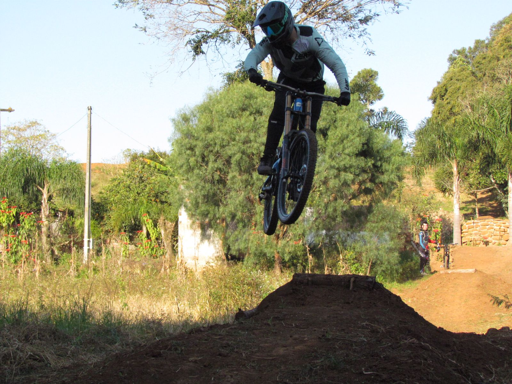
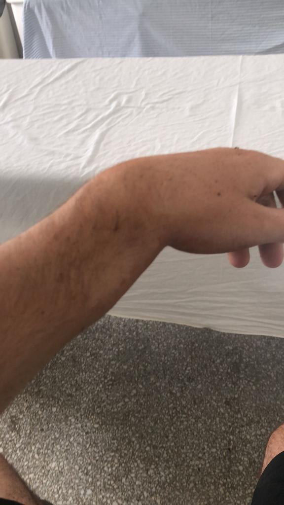
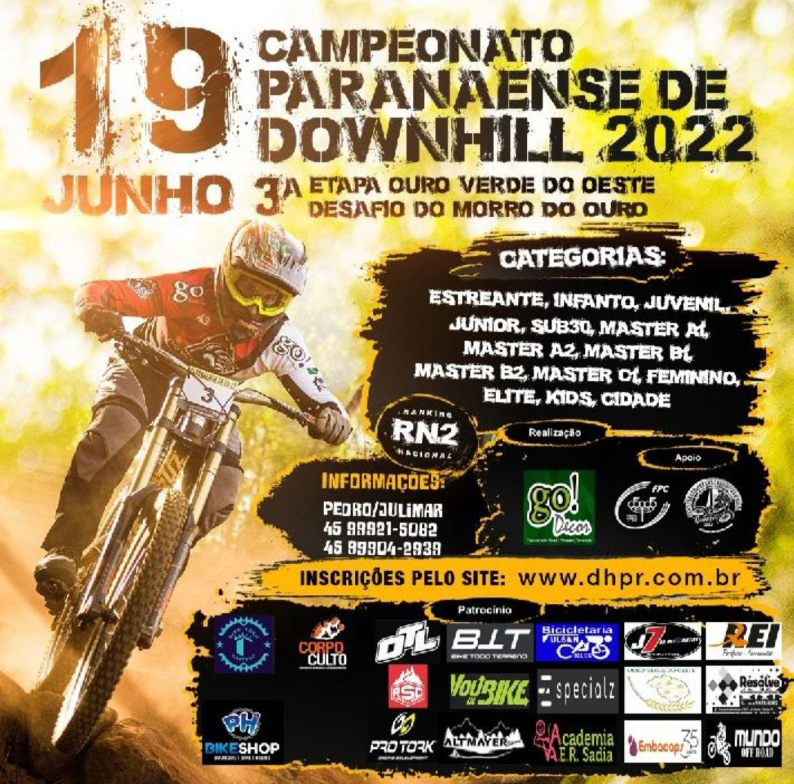

Final do campeonato paranaense União da Vitoria
DOWNHILL
Downhill e um esporte onde temos uma bicicleta espeficica para este esporte onde iremos descer montanha com inumeros obstaculos.
COMO TUDO COMEÇOU
A 1 ano atras eu comecei a praticar downhiil e logo na primeira vez eu fraturei meu punho.
Apos 2 meses com pino voltei a praticar o que eu gostava.
MEU POS CIRURGICO

Fratura no punho
Depois de um tempo em fisioterapia voltei para as pistas onde ate hoje estou.
Praticar downhill e o que eu mais gosto de fazer em todos meus sabados, onde estou treinado em busca de evoluir para participar do campeonato paranaense de downhill.
PREPARAÇÃO PARA O PARANAENSE

Floder londrina
Cada dia esta mais proximo o campeonato paranaense onde se inicia em Londrina dia 22/05.
Este ano ira ter 7 etapas onde uma delas ira ser em Irati, a cada treino meu estou me sentindo mais confiante e mais preparado para as corridas.
Espero ao meio de tantos pilotos poder trazer os melhores resultados junto comigo, pois so eu sei o quando eu percisti apos minha fratura em chegar onde eu cheguei hoje no esporte.
Todas imagens utilizadas tirando o floder são minhas.